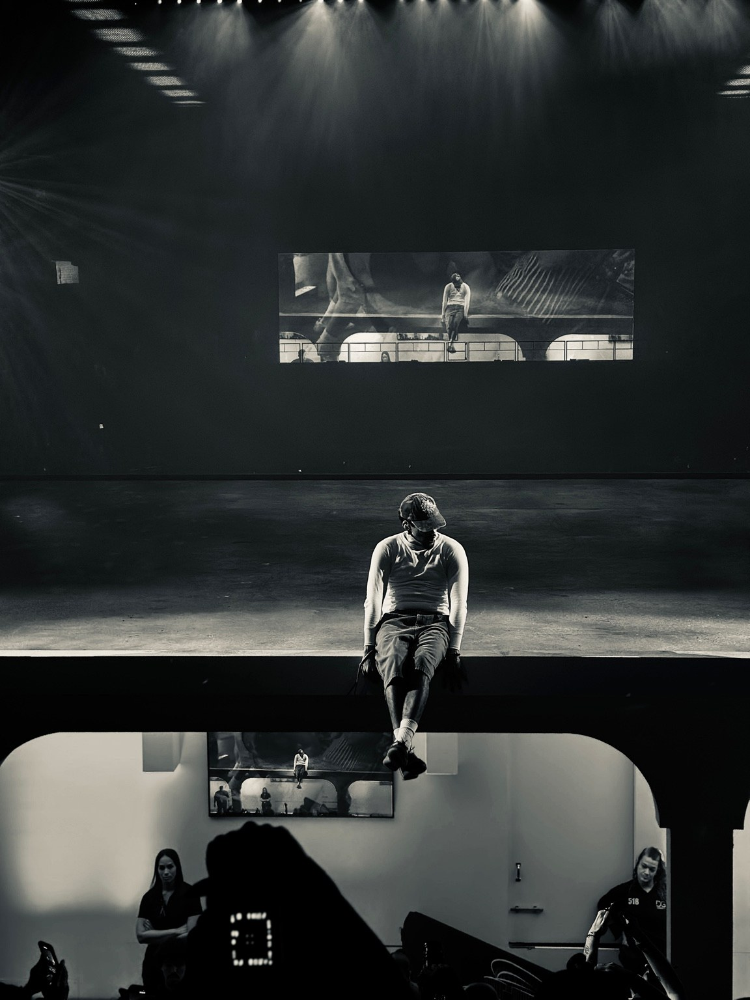

Stacks Edwards
Live Entertainment
& Culture
East Coast photographer documenting atmosphere, talent story telling, and design culture behind unforgettable live experiences.
View selected workThe perspective
Not just the artist.
The whole experience.
From intimate rooms to arena scale productions, Shot By Stacks captures performance, audience energy, production design, and the intention of a moment that gives culture a visual identity.
Selected work
Portfolio
Assignments & credentials
Let’s document
what happens live.
Available for editorial assignments, tour and concert coverage, festivals, cultural events and brand experiences throughout the East Coast and beyond.